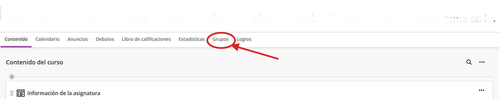
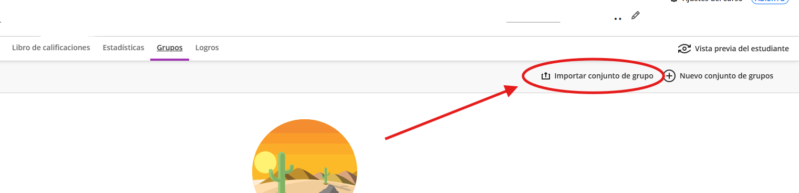
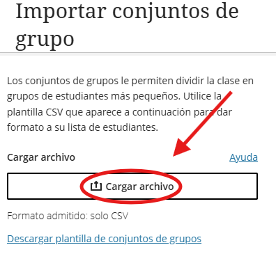
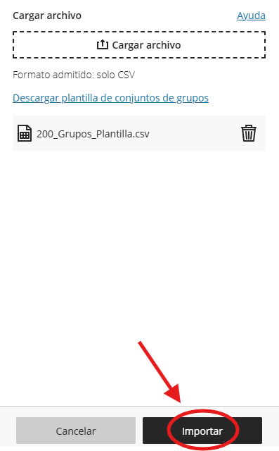

Sigue estos pasos para cargar el archivo .CSV que has generado.
¿Aún no tienes el archivo CSV? Ir al Generador de Grupos →
En el menú lateral de tu curso, debajo de "Detalles y acciones", haz clic en “Grupos del curso”.
Una vez dentro de la sección “Grupos”, pulsa en el botón “Importar conjunto de grupo” (esquina superior derecha).
Se abrirá un panel lateral. Haz clic en el área de “Cargar archivo” y selecciona el CSV que descargaste de la herramienta.
Una vez cargado y procesado, pulsa el botón “Importar”. Blackboard te enviará un correo cuando el proceso termine.
Hecho por Jose F. © 2026